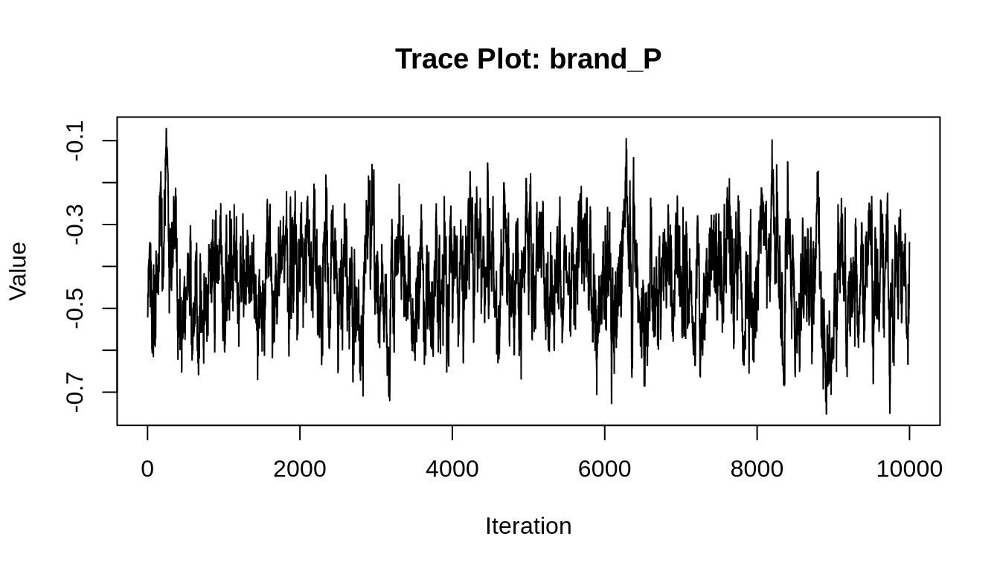
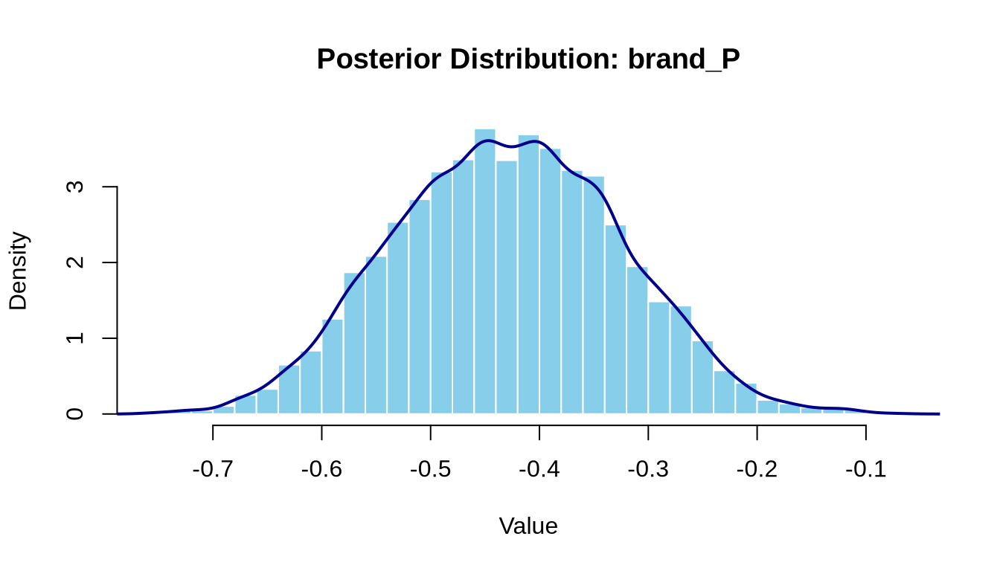

# set seed for reproducibility
set.seed(123)
# define attributes
brand <- c("N", "P", "H") # Netflix, Prime, Hulu
ad <- c("Yes", "No")
price <- seq(8, 32, by=4)
# generate all possible profiles
profiles <- expand.grid(
brand = brand,
ad = ad,
price = price
)
m <- nrow(profiles)
# assign part-worth utilities (true parameters)
b_util <- c(N = 1.0, P = 0.5, H = 0)
a_util <- c(Yes = -0.8, No = 0.0)
p_util <- function(p) -0.1 * p
# number of respondents, choice tasks, and alternatives per task
n_peeps <- 100
n_tasks <- 10
n_alts <- 3
# function to simulate one respondent’s data
sim_one <- function(id) {
datlist <- list()
# loop over choice tasks
for (t in 1:n_tasks) {
# randomly sample 3 alts (better practice would be to use a design)
dat <- cbind(resp=id, task=t, profiles[sample(m, size=n_alts), ])
# compute deterministic portion of utility
dat$v <- b_util[dat$brand] + a_util[dat$ad] + p_util(dat$price) |> round(10)
# add Gumbel noise (Type I extreme value)
dat$e <- -log(-log(runif(n_alts)))
dat$u <- dat$v + dat$e
# identify chosen alternative
dat$choice <- as.integer(dat$u == max(dat$u))
# store task
datlist[[t]] <- dat
}
# combine all tasks for one respondent
do.call(rbind, datlist)
}
# simulate data for all respondents
conjoint_data <- do.call(rbind, lapply(1:n_peeps, sim_one))
# remove values unobservable to the researcher
conjoint_data <- conjoint_data[ , c("resp", "task", "brand", "ad", "price", "choice")]
# clean up
rm(list=setdiff(ls(), "conjoint_data"))Multinomial Logit Model
This assignment expores two methods for estimating the MNL model: (1) via Maximum Likelihood, and (2) via a Bayesian approach using a Metropolis-Hastings MCMC algorithm.
1. Likelihood for the Multi-nomial Logit (MNL) Model
Suppose we have \(i=1,\ldots,n\) consumers who each select exactly one product \(j\) from a set of \(J\) products. The outcome variable is the identity of the product chosen \(y_i \in \{1, \ldots, J\}\) or equivalently a vector of \(J-1\) zeros and \(1\) one, where the \(1\) indicates the selected product. For example, if the third product was chosen out of 3 products, then either \(y=3\) or \(y=(0,0,1)\) depending on how we want to represent it. Suppose also that we have a vector of data on each product \(x_j\) (eg, brand, price, etc.).
We model the consumer’s decision as the selection of the product that provides the most utility, and we’ll specify the utility function as a linear function of the product characteristics:
\[ U_{ij} = x_j'\beta + \epsilon_{ij} \]
where \(\epsilon_{ij}\) is an i.i.d. extreme value error term.
The choice of the i.i.d. extreme value error term leads to a closed-form expression for the probability that consumer \(i\) chooses product \(j\):
\[ \mathbb{P}_i(j) = \frac{e^{x_j'\beta}}{\sum_{k=1}^Je^{x_k'\beta}} \]
For example, if there are 3 products, the probability that consumer \(i\) chooses product 3 is:
\[ \mathbb{P}_i(3) = \frac{e^{x_3'\beta}}{e^{x_1'\beta} + e^{x_2'\beta} + e^{x_3'\beta}} \]
A clever way to write the individual likelihood function for consumer \(i\) is the product of the \(J\) probabilities, each raised to the power of an indicator variable (\(\delta_{ij}\)) that indicates the chosen product:
\[ L_i(\beta) = \prod_{j=1}^J \mathbb{P}_i(j)^{\delta_{ij}} = \mathbb{P}_i(1)^{\delta_{i1}} \times \ldots \times \mathbb{P}_i(J)^{\delta_{iJ}}\]
Notice that if the consumer selected product \(j=3\), then \(\delta_{i3}=1\) while \(\delta_{i1}=\delta_{i2}=0\) and the likelihood is:
\[ L_i(\beta) = \mathbb{P}_i(1)^0 \times \mathbb{P}_i(2)^0 \times \mathbb{P}_i(3)^1 = \mathbb{P}_i(3) = \frac{e^{x_3'\beta}}{\sum_{k=1}^3e^{x_k'\beta}} \]
The joint likelihood (across all consumers) is the product of the \(n\) individual likelihoods:
\[ L_n(\beta) = \prod_{i=1}^n L_i(\beta) = \prod_{i=1}^n \prod_{j=1}^J \mathbb{P}_i(j)^{\delta_{ij}} \]
And the joint log-likelihood function is:
\[ \ell_n(\beta) = \sum_{i=1}^n \sum_{j=1}^J \delta_{ij} \log(\mathbb{P}_i(j)) \]
2. Simulate Conjoint Data
We will simulate data from a conjoint experiment about video content streaming services. We elect to simulate 100 respondents, each completing 10 choice tasks, where they choose from three alternatives per task. For simplicity, there is not a “no choice” option; each simulated respondent must select one of the 3 alternatives.
Each alternative is a hypothetical streaming offer consistent of three attributes: (1) brand is either Netflix, Amazon Prime, or Hulu; (2) ads can either be part of the experience, or it can be ad-free, and (3) price per month ranges from $4 to $32 in increments of $4.
The part-worths (ie, preference weights or beta parameters) for the attribute levels will be 1.0 for Netflix, 0.5 for Amazon Prime (with 0 for Hulu as the reference brand); -0.8 for included adverstisements (0 for ad-free); and -0.1*price so that utility to consumer \(i\) for hypothethical streaming service \(j\) is
\[ u_{ij} = (1 \times Netflix_j) + (0.5 \times Prime_j) + (-0.8*Ads_j) - 0.1\times Price_j + \varepsilon_{ij} \]
where the variables are binary indicators and \(\varepsilon\) is Type 1 Extreme Value (ie, Gumble) distributed.
The following code provides the simulation of the conjoint data.
Note
3. Preparing the Data for Estimation
The “hard part” of the MNL likelihood function is organizing the data, as we need to keep track of 3 dimensions (consumer \(i\), covariate \(k\), and product \(j\)) instead of the typical 2 dimensions for cross-sectional regression models (consumer \(i\) and covariate \(k\)). The fact that each task for each respondent has the same number of alternatives (3) helps. In addition, we need to convert the categorical variables for brand and ads into binary variables.
To prepare the dataset for estimation, we convert categorical variables (brand and ad) into dummy variables. We use Netflix (N) as the base for brand, and “No Ads” as the base for ad. This structure will allow us to easily compute utilities and evaluate likelihood functions.
library(readr)
library(dplyr)
library(ggplot2)
# Load the simulated conjoint data
conjoint <- read_csv("files/conjoint_data.csv")# Recode factors
conjoint <- conjoint %>%
mutate(
brand = factor(brand),
ad = factor(ad),
price = as.numeric(price),
brand_P = ifelse(brand == "P", 1, 0),
brand_H = ifelse(brand == "H", 1, 0),
ad_yes = ifelse(ad == "Yes", 1, 0)
)
# Check structure
head(conjoint)# A tibble: 6 × 9
resp task choice brand ad price brand_P brand_H ad_yes
<dbl> <dbl> <dbl> <fct> <fct> <dbl> <dbl> <dbl> <dbl>
1 1 1 1 N Yes 28 0 0 1
2 1 1 0 H Yes 16 0 1 1
3 1 1 0 P Yes 16 1 0 1
4 1 2 0 N Yes 32 0 0 1
5 1 2 1 P Yes 16 1 0 1
6 1 2 0 N Yes 24 0 0 14. Estimation via Maximum Likelihood
The log-likelihood function for a set of parameters \(\beta\) is defined as:
\[ \ell(\beta) = \sum_{i=1}^n \sum_{j=1}^J y_{ij} \log \left( \frac{e^{X_{ij} \beta}}{\sum_k e^{X_{ik} \beta}} \right) \]
We implement this using R’s optim() function.
# Define the log-likelihood function for MNL
mnl_log_likelihood <- function(beta, data) {
# Extract variables
X <- as.matrix(data[, c("brand_P", "brand_H", "ad_yes", "price")])
y <- data$choice
n <- nrow(X)
# Compute utility
utilities <- X %*% beta
# Create group IDs for each choice set
group_ids <- paste(data$resp, data$task, sep = "_")
# Compute denominator of MNL (sum of exp utilities within choice sets)
denom <- ave(exp(utilities), group_ids, FUN = function(x) sum(x))
# Compute individual probabilities
probs <- exp(utilities) / denom
# Compute log-likelihood
log_likelihood <- sum(y * log(probs))
return(-log_likelihood) # negative for minimization
}
# Initial guesses
init_beta <- rep(0, 4) # one for each variable
# Maximize log-likelihood
mnl_fit <- optim(
par = init_beta,
fn = mnl_log_likelihood,
data = conjoint,
method = "BFGS",
hessian = TRUE
)
# Extract coefficients
mnl_coefs <- mnl_fit$par
names(mnl_coefs) <- c("brand_P", "brand_H", "ad_yes", "price")
mnl_coefs brand_P brand_H ad_yes price
-0.43957167 -0.94119432 -0.73200405 -0.09948116 Interpretation of MLE Coefficient Estimates
| Variable | Estimate | Interpretation |
|---|---|---|
brand_P |
–0.440 | Holding all else constant, Amazon Prime is less preferred than Netflix (the base brand), reducing utility by 0.44 units. |
brand_H |
–0.941 | Hulu is the least preferred brand — its presence reduces utility by 0.94 units relative to Netflix. |
ad_yes |
–0.732 | Including advertisements significantly lowers utility (by 0.73 units), consistent with consumers disliking ads. |
price |
–0.099 | Each additional dollar in monthly price reduces utility by about 0.10 units — a strong and expected negative price sensitivity. |
Summary of Results
Brand Preferences: Consumers prefer Netflix the most, followed by Amazon Prime, with Hulu being the least preferred. This pattern aligns with the true simulated part-worths: Netflix = 1.0, Prime = 0.5, and Hulu = 0.
Ad Sensitivity: There is a strong negative coefficient for
ad_yes, indicating that consumers clearly dislike ad-supported streaming plans.Price Sensitivity: The model captures a realistic and expected negative relationship between price and utility. The estimated coefficient (–0.099) closely matches the true simulated value of –0.1.
After estimating the model via optim(), we can extract the Hessian matrix to approximate the variance-covariance matrix of the MLEs. The diagonal of the inverse Hessian gives us the variances, and we compute standard errors and 95% confidence intervals accordingly.
# Extract estimated parameters
estimates <- mnl_fit$par
names(estimates) <- c("brand_P", "brand_H", "ad_yes", "price")
# Compute standard errors from inverse Hessian
vcov_matrix <- solve(mnl_fit$hessian)
std_errors <- sqrt(diag(vcov_matrix))
# 95% confidence intervals
z_value <- qnorm(0.975) # ≈ 1.96
ci_lower <- estimates - z_value * std_errors
ci_upper <- estimates + z_value * std_errors
# Combine into a table
results_df <- data.frame(
Parameter = names(estimates),
Estimate = round(estimates, 3),
StdError = round(std_errors, 3),
CI_Lower = round(ci_lower, 3),
CI_Upper = round(ci_upper, 3)
)
library(knitr)
kable(results_df, caption = "MLE Estimates with Standard Errors and 95% Confidence Intervals")| Parameter | Estimate | StdError | CI_Lower | CI_Upper | |
|---|---|---|---|---|---|
| brand_P | brand_P | -0.440 | 0.104 | -0.644 | -0.236 |
| brand_H | brand_H | -0.941 | 0.111 | -1.159 | -0.724 |
| ad_yes | ad_yes | -0.732 | 0.088 | -0.904 | -0.560 |
| price | price | -0.099 | 0.006 | -0.112 | -0.087 |
Interpretation of Confidence Intervals
Amazon Prime is significantly less preferred than Netflix. Since the CI does not include 0, this effect is statistically significant.
Hulu is much less preferred than Netflix. This large, negative, and statistically significant estimate shows strong consumer aversion to Hulu.
Including ads significantly reduces utility. Consumers have a clear preference for ad-free streaming services.
The price coefficient is statistically significant and negative, meaning that as price increases, utility decreases—consistent with economic theory.
Summary: All four parameters are statistically significant at the 95% confidence level since none of their intervals include zero. The direction and magnitude of the effects align well with both theoretical expectations and the simulated ground truth:
Netflix is the preferred brand (baseline).
Consumers dislike ads and are sensitive to higher prices.
Hulu has the largest negative utility among brands.
5. Estimation via Bayesian Methods
Bayesian Estimation using Metropolis-Hastings
We now estimate the posterior distribution of the MNL model parameters using a Metropolis-Hastings MCMC sampler. We specify the following priors:
- \(\beta_\text{brand\_P}, \beta_\text{brand\_H}, \beta_\text{ad\_yes} \sim \mathcal{N}(0, 5)\)
- \(\beta_\text{price} \sim \mathcal{N}(0, 1)\)
We take 11,000 total MCMC samples and discard the first 1,000 as burn-in. The proposal distribution is symmetric and diagonal: - \(\mathcal{N}(0, 0.05)\) for the binary-variable betas - \(\mathcal{N}(0, 0.005)\) for the price beta
# Reuse the log-likelihood function from earlier
log_likelihood <- function(beta, data) {
X <- as.matrix(data[, c("brand_P", "brand_H", "ad_yes", "price")])
y <- data$choice
util <- X %*% beta
group_ids <- paste(data$resp, data$task, sep = "_")
denom <- ave(exp(util), group_ids, FUN = sum)
prob <- exp(util) / denom
log_lik <- sum(y * log(prob))
return(log_lik)
}
# Define log-prior
log_prior <- function(beta) {
lp <- dnorm(beta[1], 0, sqrt(5), log=TRUE) +
dnorm(beta[2], 0, sqrt(5), log=TRUE) +
dnorm(beta[3], 0, sqrt(5), log=TRUE) +
dnorm(beta[4], 0, sqrt(1), log=TRUE)
return(lp)
}
# Log-posterior = log-likelihood + log-prior
log_posterior <- function(beta, data) {
log_likelihood(beta, data) + log_prior(beta)
}
# Metropolis-Hastings sampler
run_mcmc <- function(data, n_iter = 11000, proposal_sd = c(0.05, 0.05, 0.05, 0.005)) {
draws <- matrix(NA, nrow = n_iter, ncol = 4)
colnames(draws) <- c("brand_P", "brand_H", "ad_yes", "price")
beta_current <- c(0, 0, 0, 0)
logpost_current <- log_posterior(beta_current, data)
for (i in 1:n_iter) {
beta_proposed <- beta_current + rnorm(4, mean = 0, sd = proposal_sd)
logpost_proposed <- log_posterior(beta_proposed, data)
accept_prob <- exp(logpost_proposed - logpost_current)
if (runif(1) < accept_prob) {
beta_current <- beta_proposed
logpost_current <- logpost_proposed
}
draws[i, ] <- beta_current
}
return(draws)
}
# Run MCMC
set.seed(42)
mcmc_draws <- run_mcmc(conjoint)
# Remove burn-in
mcmc_posterior <- mcmc_draws[1001:11000, ]
posterior_summary <- apply(mcmc_posterior, 2, function(x) {
c(mean = mean(x),
sd = sd(x),
`2.5%` = quantile(x, 0.025),
`97.5%` = quantile(x, 0.975))
})
Summary
All four parameters are statistically meaningful: their 95% credible intervals do not include 0.
The Bayesian posterior estimates are very similar to the MLEs — this supports that both inference methods are consistent with the data and the underlying true utility model.
The credible intervals are tight, reflecting high certainty in your parameter estimates given the data and priors.
Posterior Diagnostics for brand_P
To assess convergence and sampling behavior, we examine the trace plot and posterior histogram for the parameter brand_P.
# Trace plot for brand_P
plot(mcmc_posterior[, "brand_P"], type = "l",
main = "Trace Plot: brand_P",
xlab = "Iteration", ylab = "Value")
# Histogram / posterior density for brand_P
hist(mcmc_posterior[, "brand_P"], breaks = 40, probability = TRUE,
main = "Posterior Distribution: brand_P",
xlab = "Value", col = "skyblue", border = "white")
lines(density(mcmc_posterior[, "brand_P"]), col = "darkblue", lwd = 2)
Interpretation
To assess the convergence and distribution of the Bayesian estimate for
brand_P, we examine both the trace plot and posterior histogram.Trace Plot
The trace plot of
brand_Pover 10,000 post–burn-in iterations shows stable and well-mixed behavior. The chain fluctuates around a consistent central region, suggesting good convergence and no signs of non-stationarity or drift. This supports the validity of the posterior estimates.Posterior Distribution
The histogram and density plot for
brand_Preveal a roughly symmetric and unimodal distribution centered near –0.43. This aligns well with both the MLE and true simulated value, indicating that the posterior is well-informed by the data. The shape of the distribution also suggests reasonable uncertainty, with most mass concentrated between –0.63 and –0.23.Together, these plots confirm that the MCMC sampler produced reliable draws from the posterior distribution for
brand_P.
Posterior Mens
# MLE estimates
mle_estimates <- c(brand_P = -0.440, brand_H = -0.941, ad_yes = -0.732, price = -0.099)
# Compute Bayesian summaries directly
posterior_means <- colMeans(mcmc_posterior)
posterior_sds <- apply(mcmc_posterior, 2, sd)
posterior_cis <- apply(mcmc_posterior, 2, quantile, probs = c(0.025, 0.975))
# Build comparison data frame
posterior_df <- data.frame(
Parameter = names(mle_estimates),
MLE = round(mle_estimates, 3),
Posterior_Mean = round(posterior_means, 3),
Posterior_SD = round(posterior_sds, 3),
CI_Lower = round(posterior_cis[1, ], 3),
CI_Upper = round(posterior_cis[2, ], 3),
row.names = NULL
)# Display table
library(knitr)
kable(posterior_df, caption = "Comparison of MLE and Bayesian Posterior Estimates")| Parameter | MLE | Posterior_Mean | Posterior_SD | CI_Lower | CI_Upper |
|---|---|---|---|---|---|
| brand_P | -0.440 | -0.429 | 0.103 | -0.628 | -0.232 |
| brand_H | -0.941 | -0.941 | 0.114 | -1.165 | -0.721 |
| ad_yes | -0.732 | -0.732 | 0.090 | -0.911 | -0.558 |
| price | -0.099 | -0.100 | 0.006 | -0.112 | -0.087 |
Interpretation
- The posterior means are nearly identical to the MLEs, confirming that the data are highly informative and that the choice of priors had little influence.
- The posterior standard deviations provide a similar sense of uncertainty as the standard errors from MLE.
- The 95% credible intervals are also close to the confidence intervals, but offer a Bayesian interpretation — we can say there is a 95% probability the parameter lies within the interval, given the data and prior.
- This close agreement between Bayesian and frequentist results suggests that the model is well-specified, and both estimation approaches yield consistent and reliable parameter estimates.
6. Discussion
If we had not simulated the data ourselves, we could still draw meaningful insights from the estimated parameters based solely on model output. All parameter estimates — from both the MLE and Bayesian approaches — are directionally consistent, statistically significant, and aligned with consumer intuition.
The fact that \(\beta_\text{Prime} < \beta_\text{Netflix}\) suggests that, all else equal, consumers prefer Netflix over Amazon Prime. This preference is encoded in the utility function, and the magnitude of the difference reflects how strongly Netflix dominates Prime in consumers’ choices.
Similarly, \(\beta_\text{Hulu}\) being even more negative confirms Hulu is the least preferred brand among the three. Without simulation knowledge, we can still conclude that Hulu is less attractive based on choice behavior alone.
A negative \(\beta_\text{price}\) indicates that, holding other attributes constant, higher prices reduce the probability of an alternative being chosen. This makes intuitive economic sense and is consistent with downward-sloping demand — consumers prefer cheaper plans, all else equal.
Taken together, these estimates reflect a reasonable and interpretable preference structure that validates the utility-based choice model, even without knowing the “true” data-generating process.
Extending to a Hierarchical (Random-Parameter) Logit Model
To simulate data from — and estimate parameters of — a multi-level (hierarchical or random-parameter) logit model, we would need to introduce heterogeneity in preferences across individuals. In other words, rather than assuming a single, fixed set of utility weights (betas) shared by all respondents, we would allow each individual to have their own \(\boldsymbol{\beta}_i\), drawn from a population-level distribution.
Changes Required for Simulation:
Individual-level variation: Instead of using a fixed \(\boldsymbol{\beta}\) for all, we would simulate each respondent’s \(\boldsymbol{\beta}_i\) from a multivariate normal distribution: \[ \boldsymbol{\beta}_i \sim \mathcal{N}(\boldsymbol{\mu}, \boldsymbol{\Sigma}) \] where \(\boldsymbol{\mu}\) is the population mean vector and \(\boldsymbol{\Sigma}\) is the covariance matrix capturing between-individual variability and correlation between preferences.
Data generation: When simulating choices, each respondent’s utilities would be computed using their own \(\boldsymbol{\beta}_i\), leading to more realistic (and noisier) variation in choices across people.
Changes Required for Estimation:
- Hierarchical modeling: We would need to estimate both levels:
- The distribution of \(\boldsymbol{\beta}_i\) across individuals (i.e., \(\boldsymbol{\mu}, \boldsymbol{\Sigma}\)).
- The individual-level \(\boldsymbol{\beta}_i\) values conditional on observed choices.
- Bayesian MCMC or Mixed Logit tools: Estimation is more complex and typically handled using:
- Bayesian hierarchical modeling with Gibbs sampling or Hamiltonian Monte Carlo (e.g., via
Stan,PyMC, orrstanarm), or - Frequentist methods using simulation-based maximum likelihood (e.g., mixed logit with
mlogitorapollopackages in R).
- Bayesian hierarchical modeling with Gibbs sampling or Hamiltonian Monte Carlo (e.g., via
This hierarchical structure allows us to capture taste heterogeneity — a key feature in real-world conjoint analysis — and leads to more personalized predictions, better model fit, and richer insights into market segmentation.